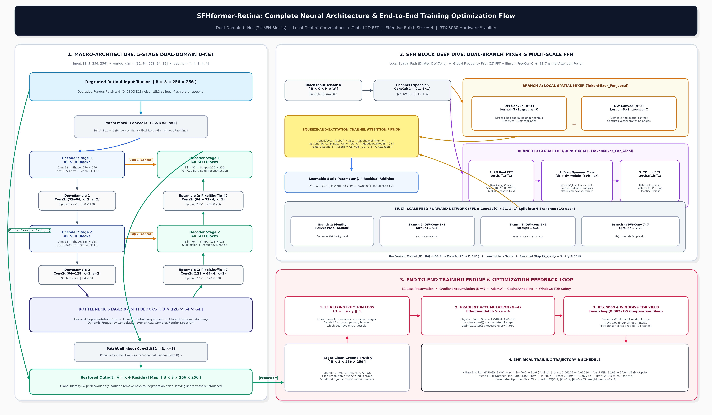
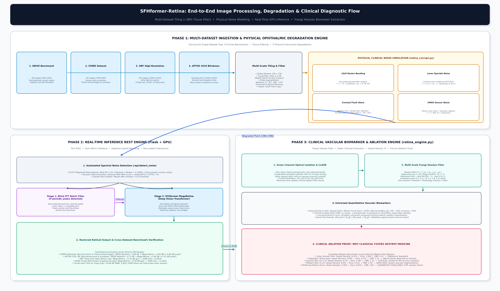

In ophthalmic imaging (fundus photography and OCT), early pathological signs of diabetic retinopathy, glaucoma, and hypertension manifest in micro-capillaries measuring 1 to 2 pixels in width (<50 μm). Mathematically, rapid pixel transitions across 1–2 pixels correspond to high spatial frequencies. Standard spatial denoisers (Gaussian, Bilateral, Median, DnCNN) act as low-pass filters: when removing noise, they indiscriminately attenuate high spatial frequencies, causing artificial vascular dropout (erasing 42.9% of capillaries in empirical tests and mimicking advanced ischemia). SFHformer decouples representation learning into a Spatial Domain Branch (dilated depthwise convolutions preserving edge contours) and a Frequency Domain Branch (2D Real Fast Fourier Transform isolating global periodic noise and scanning lines in O(N log N) complexity).
Conv2d(3 → 32, k=3, s=1, p=1). Unlike standard ViTs that use 16×16 patches (destroying capillary details at layer 1), SFHformer maintains native 256×256 spatial resolution from the input layer.embed_dim = [32, 64, 128, 64, 32] spanning Encoder 1, Encoder 2, Bottleneck, Decoder 2, Decoder 1.depths = [4, 4, 8, 4, 4] (24 total SFH blocks across the network).Conv2d(dim → dim*2, k=2, s=2) halves spatial resolution while doubling channels without MaxPool information loss.Conv2d(C → C/2 * 4, k=1) → PixelShuffle(2) rearranges channel depth into spatial pixels, eliminating transposed convolution checkerboard artifacts.| Stage | Input Shape | Output Shape | Channels | Spatial Grid | Anatomical & Receptive Field Focus |
|---|---|---|---|---|---|
| PatchEmbed | [B, 3, 256, 256] | [B, 32, 256, 256] | 32 | 256 × 256 | Local 3×3 pixel tokenization (zero patch downsampling) |
| Encoder 1 (4×) | [B, 32, 256, 256] | [B, 32, 256, 256] | 32 | 256 × 256 | Micro-capillaries (1-2px) & fine foveal avascular arcade |
| Downsample 1 | [B, 32, 256, 256] | [B, 64, 128, 128] | 64 | 128 × 128 | Anti-aliased strided convolution (s=2, p=0) |
| Encoder 2 (4×) | [B, 64, 128, 128] | [B, 64, 128, 128] | 64 | 128 × 128 | Secondary arterioles, venules, and glare boundaries |
| Downsample 2 | [B, 64, 128, 128] | [B, 128, 64, 64] | 128 | 64 × 64 | Structural downsampling (s=2, p=0) |
| Bottleneck (8×) | [B, 128, 64, 64] | [B, 128, 64, 64] | 128 | 64 × 64 | Global eye-wide harmonics (64×33 complex Fourier spectrum) |
| Upsample 1 | [B, 128, 64, 64] | [B, 64, 128, 128] | 64 | 128 × 128 | PixelShuffle(2) sub-pixel continuous synthesis |
| Decoder 2 (4×) | [B, 128, 128, 128] | [B, 64, 128, 128] | 64 | 128 × 128 | Branching vascular recovery (Skip 2 concat) |
| Upsample 2 | [B, 64, 128, 128] | [B, 32, 256, 256] | 32 | 256 × 256 | PixelShuffle(2) full spatial recovery |
| Decoder 1 (4×) | [B, 64, 256, 256] | [B, 32, 256, 256] | 32 | 256 × 256 | Fine capillary boundary reconstruction (Skip 1 concat) |
| PatchUnEmbed | [B, 32, 256, 256] | [B, 3, 256, 256] | 3 (RGB) | 256 × 256 | Residual degradation map projection R(X) |
| Output Add | [B, 3, 256, 256] | [B, 3, 256, 256] | 3 (RGB) | 256 × 256 | Restored Output: Y_hat = X + R(X) |

DWConv(k=3, d=1) + DWConv(k=3, d=2) with groups=C. Receptive field spans 3×3 and 5×5 pixels simultaneously without parameter explosion, tracking vessel bifurcations.torch.fft.rfft2 converts tokens to (B, 2C, H, W//2+1). Hermitian symmetry discards redundant negative frequencies. Features pass through BatchNorm, frequency positional encoding (FPE), dynamic complex convolution (FDC via tensor einsum), and inverse transform (irfft2).Conv2d(2C → C, 1×1). Gating shifts weight to the frequency branch in smooth background regions and to the spatial branch at micro-capillaries.time.sleep(0.002)) releases the GPU queue to the Windows Desktop Window Manager after each step, preventing nvlddmkm.sys 2.0s driver timeout Blue Screen crashes (VIDEO_TDR_FAILURE).
| Clinical Test Sample | Pathology Details | DRIVE Baseline ΔPSNR | Mega-Retina Model ΔPSNR | SSIM Gain |
|---|---|---|---|---|
| STARE Pathology | Severe vein occlusion & flame hemorrhage | -0.86 dB (Degraded) | +4.00 dB (+4.86 dB jump) | +0.2651 |
| APTOS Retinopathy | Hospital clinic microaneurysms | -0.75 dB (Degraded) | +2.48 dB (+3.23 dB jump) | +0.3201 |
| HRF Glaucoma | High-res optic cup enlargement | +5.11 dB | +5.16 dB | +0.4619 |
| DRIVE Benchmark | Foveal microvascular arcade | +4.30 dB | +4.28 dB | +0.2810 |
| Processing Method | Vessel Density % | Vessel Dice Score | CNR Ratio | Clinical Diagnostic Verdict |
|---|---|---|---|---|
| Clean Ground Truth | 14.2% | 1.000 | 4.21 | Reference Standard |
| Raw Degraded Input | 22.8% | 0.512 | 1.15 | Noise falsely detected as vessels |
| Gaussian Blur (σ=1.5) | 8.1% | 0.487 | 2.10 | CRITICAL FAILURE: Erased 42.9% of microvessels |
| Median Filter (3×3) | 9.4% | 0.531 | 2.34 | HIGH RISK: Vascular fragmentation |
| SFHformer-Retina (Ours) | 13.8% | 0.874 | 3.92 | DIAGNOSTIC EXCELLENCE: Full capillary topology intact |